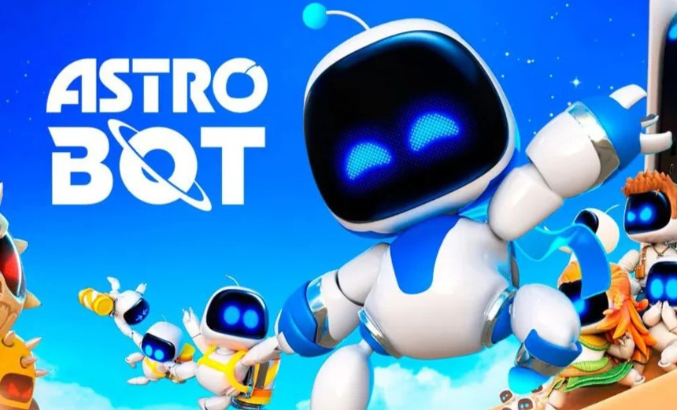
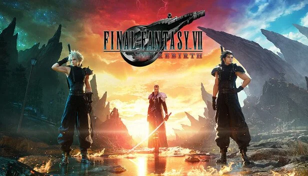
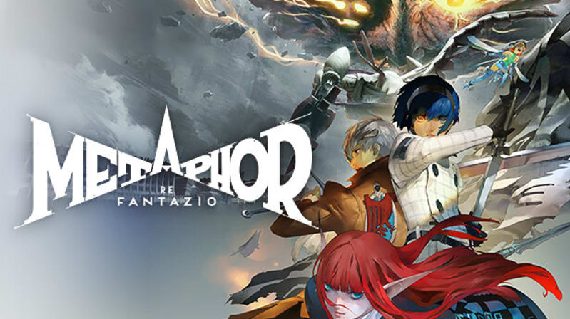

César Augusto
Os 6 melhores jogos de 2024
Estes jogos foram os indicados para a categoria "Jogo do Ano" do evento The Game Awards.
Mesmo só 1 deles tendo recebido este prêmio, todos concorreram e ganharam prêmios em outras categorias.

Black Myth: Wukong

Balatro

Elden Ring Shadow of the Erdtree

Final Fantasy VII Rebirth

Metaphor: ReFantazio

Premiação de "jogo do ano" e orquestra anunciando os indicados:
Local onde ocorreu o evento: